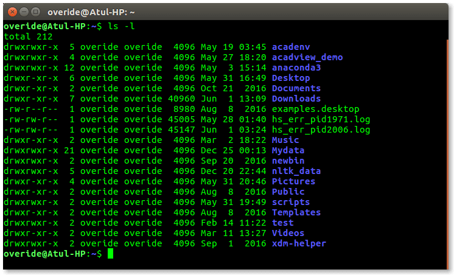

Introdução
A tecnologia por trásOs tradutores online são ferramentas que usam a tecnologia de tradução automática para traduzir textos de um idioma para outro. A tradução automática é feita por meio de um programa de computador, que analisa o texto e o traduz usando um dicionário e uma série de regras gramaticais.
Desenvolvimento
A tradução automática ainda não é perfeita porque ela não considera o contexto do texto. Isso significa que às vezes o tradutor online pode traduzir um texto de forma literal, sem compreender o seu significado.
Conclusão
No entanto, com línguas menos populares, há menos textos traduzidos para serem usados como referência pelo programa de tradução. Isso significa que a tradução automática para esses idiomas tende a ser menos precisa.